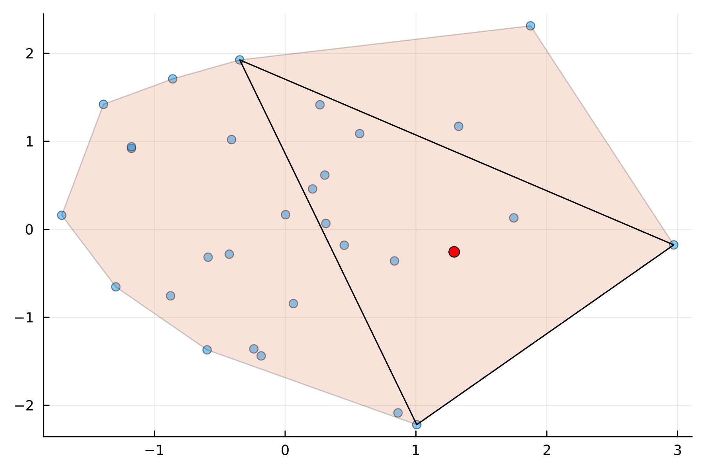

CaratheodoryPruning.jl Documentation
Carathéodory's theorem is a theorem in convex geometry relating to a minimal number of points in $\R^N$ required to enclose some point. Suppose that you have a set of points $P \in \mathbb{R}^N$ with $|P| > N$. Additionally, let $\mathbf{x} \in \text{conv}(P)$, the convex hull of $P$. This means that $\mathbf{x}$ can be written as a positive linear combination of the points in $P$ where the coefficients sum to one. The theorem states that there exists a subset $Q\subset P$ with $|Q|=N+1$ such that $\mathbf{x} \in \text{conv}(Q)$. In $N=2$ dimensions, this means that given some number of points that enclose $\mathbf{x}$, we can always prune these down to three points, or a triangle, that enclose $\mathbf{x}$.

This theorem also extends to conic hulls, where the coefficients of the linear combination need not add to one, they simply need to be nonnegative. In the conic case, with $\mathbf{x} \in \text{cone}(P)$, the conic hull of $P$, there exists a subset $Q\subset P$ with $|Q|=N$ such that $\mathbf{x} \in \text{cone}(Q)$.
We can write out the conic version of Carathéodory's theorem as follows. Denote the points in $P$ as $\mathbf{p}_1, \ldots, \mathbf{p}_M$. Also define be the matrix
\[\mathbf{P} = \begin{bmatrix} \vert & \vert & & \vert\\ \mathbf{p}_1 & \mathbf{p}_2 & \cdots & \mathbf{p}_M\\ \vert & \vert & & \vert\\ \end{bmatrix} \in \mathbb{R}^{N \times M}.\]
The statement that $\mathbf{x}\in\text{cone}(P)$ implies that there exists a nonnegative vector of weights, $\mathbf{w} \in \mathbb{R}^M$, such that
\[\mathbf{P} \mathbf{w} = \mathbf{x}.\]
Carathéodory's theorem states that we can form a subset of points $Q \subset P$, such that we get a new set of nonnegative weights, $\mathbf{v}\in\mathbb{R}^{N}$, satisfying
\[\mathbf{Q} \mathbf{v} = \begin{bmatrix} \vert & \vert & & \vert\\ \mathbf{p}_{i_1} & \mathbf{p}_{i_2} & \cdots & \mathbf{p}_{i_N}\\ \vert & \vert & & \vert\\ \end{bmatrix} \mathbf{v} = \mathbf{x} = \mathbf{P} \mathbf{w}.\]
Once the row indices, $i_1, \ldots, i_N$, are sampled, we can obtain the new weights by performing a linear solve on the matrix equation $\mathbf{Q} \mathbf{v} = \mathbf{x}$. However, the difficulty in this problem is in subsampling the correct row indices such that the new weights are all nonnegative. The goal of having nonnegative weights can be useful in problems such as numerical quadrature where negative weights could lead to numerical instability.
CaratheodoryPruning.jl implements various algorithms for this row index subselection problem.
The base Carathéodory pruning method takes in a matrix V of size M by N, or the transpose of the $\mathbf{P}$ matrix above. It also takes in a vector of nonnegative weights w_in of length M. It then returns a nonnegative pruned vector, w, of length M, and a vector of row indices of length N, inds, such that V[inds,:]' * w[inds] is approximately equal to V' * w_in. If return_errors is set to true, it additionally returns a vector of moment errors at each iteration.
CaratheodoryPruning.caratheodory_pruning — Functioncaratheodory_pruning(V, w_in, kernel_downdater, prune_weights![; caratheodory_correction=true, progress=false, zero_tol=1e-16, return_error=false, errnorm=norm])
Base method for Caratheodory pruning of the matrix V and weights w_in. Returns a new set of weights, w, a set of indices, inds, and an error err such that w only has nonzero elements at the indices, inds, and
- if
size(V,1) > size(V,2),||Vᵀw_in - V[inds,:]ᵀw_in[inds]|| = err ≈ 0 - if
size(V,1) < size(V,2),||V w_in - V[inds,:] w_in[inds]|| = err ≈ 0
Note that if return_error=false and caratheodory_correction=false, the error is not computed and a default return value of 0.0 is used.
Uses the kernel_downdater object to generate kernel vectors for pruning, and the prune_weights! method to prune weights after kernel vectors have been formed.
If caratheodory_correction=true, uses a linear solve at the end to reduce error in the moments.
If progress=true, displays a progress bar.
zero_tol determines the tolerance for a weight equaling zero.
If return_error=true or caratheodory_correction=true, computes the corresponding errors in moments, err. If both return_error and caratheodory_correction are set to false, err is set to 0.0.
errornorm is the method called on the truth moments vs computed moments to evaluate final error, only used if caratheodory_correction=true or return_error=true. Defaults to LinearAlgebra.jl's norm method.
caratheodory_pruning(V, w_in[; kernel=:GivensUpDown, pruning=:first, caratheodory_correction=true, return_error=false, errnorm=norm, zero_tol=1e-16, progress=false, kernel_kwargs...])
Helper method for calling the base caratheodory_pruning method.
Takes in a symbol for kernel, and forms a KernelDowndater object depending on what is passed in. Also passes additional kwargs into the KernelDowndater:
Options include :FullQRDowndater or :FullQR, :GivensDowndater or :Givens, :CholeskyDowndater or :Cholesky, :FullQRUpDowndater or :FullQRUpDown, and :GivensUpDownDater or :GivensUpDown.
Takes in a symbol for pruning, and chooses a pruning method depending on what is passed in. Options are :first or :minabs.
See the other caratheodory_pruning docstring for info on other arguments.
The implemented methods for Carathéodory pruning are iterative kernel-based algorithms. This means that at each step, kernel vectors for the transpose of V[inds,:] are formed so that they can be used to pivot the weights without changing the moments. The pivot is chosen to ensure that (at least) one of the weights are set to zero, and the rest are still nonnegative. This iteration is then repeated until M - N of the row indices are pruned, and we are left with N row indices.
Here is a full example of generating a random matrix V and random, positive vector of weights w_in, computing the moments eta, using caratheodory_pruning to generate pruned weights w, and computing the moment error.
using CaratheodoryPruning
using Random
M = 100
N = 10
V = rand(M, N)
w_in = rand(M)
eta = V' * w_in
w, inds = caratheodory_pruning(V, w_in)
w[inds]10-element Vector{Float64}:
6.024729738575634
6.453835375942296
3.929483809621981
2.9016573147807136
7.451269086546258
14.833288666800724
1.8868570997858618
5.684190887232419
0.5472984525001309
5.739878063461836error = maximum(abs.(V[inds,:]' * w[inds] .- eta))1.7763568394002505e-14